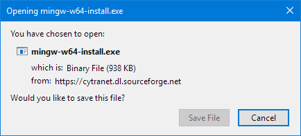
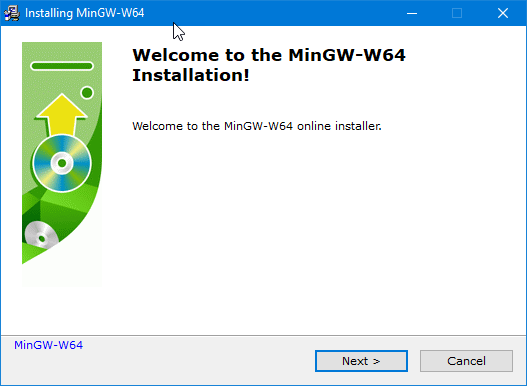
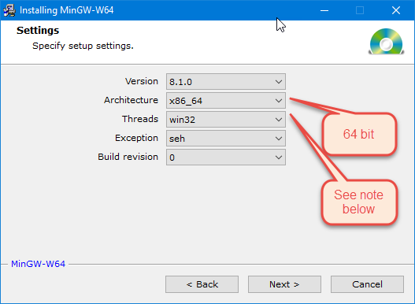
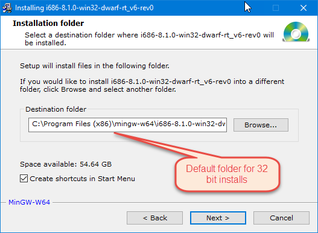
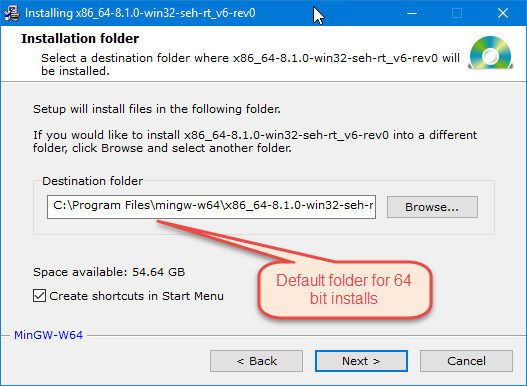
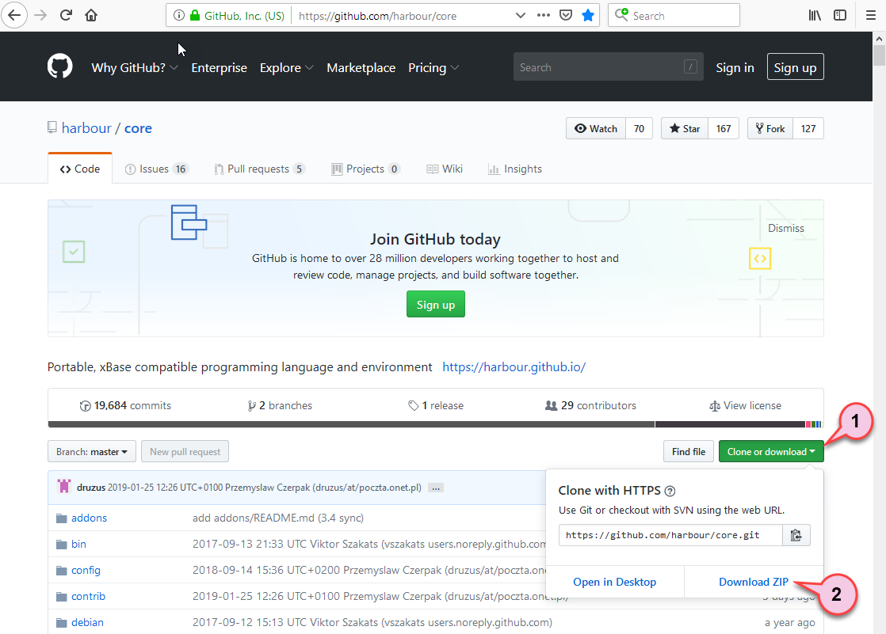
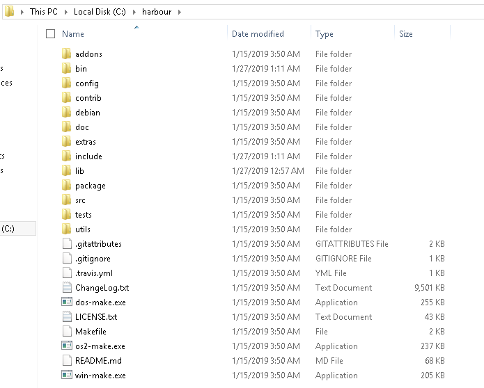
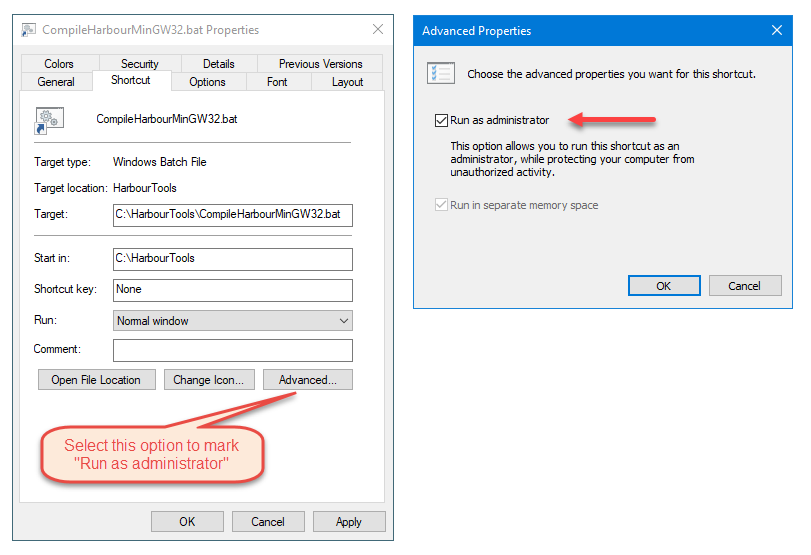
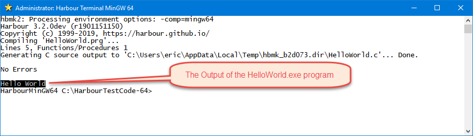
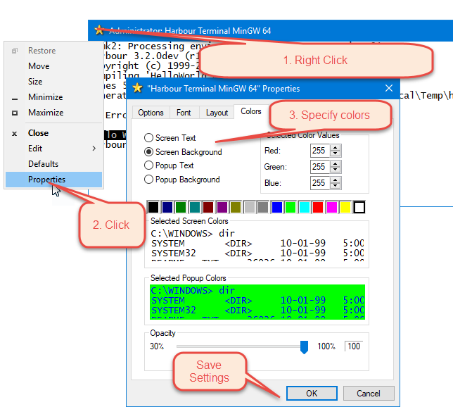

How to Install Harbour on Windows
 Author: Eric Lendvai
Author: Eric Lendvai
Table of Contents
- Introduction
- Installing C compiler MinGW-w64 for 32 and 64 bit Windows
- Download Harbour Core
- Compiling Harbour in 32 bit mode with MinGW
- Compiling Harbour in 64 bit mode with MinGW
- Setting up a 32 bit Terminal
- Setting up a 64 bit Terminal
- Testing the installation for Harbour, Hello World
- Conclusion
Introduction
You can find a generic description of how to build Harbour from source at the master github repo: https://github.com/harbour/core#how-to-build
But this article will focus on real, step by step, instructions for those developing in Microsoft Windows.
This article is also a practical guide for VFP developers intending to use Harbour.
One of the main reasons to use Harbour on Windows, is the ability to use and create COM objects. This allows you to have Object Oriented language interoperability.
For VFP developers, this could be a means to add Harbour components to your VFP app, or add to Harbour VFP COM objects.
This article will also be regularly updated as new versions of Windows and C compilers are made available.
The Harbour compiler takes PRG files, creates some C source code equivalent files, than relies on a C compiler and linker to create the actual binaries.
There are two methodologies for Harbour to create the C source code files. One, the most common, is to create C code that has some PCODE in it, which are basically a series of arrays with numeric values. This method relies on a Harbour Virtual Machine (HVM), and Harbour Runtime Library (HRL). But all of this gets linked inside a single EXE you generate with Harbour. The second method is to create C code that does not rely on a HVM, and creates all pure C code, that can still use the HRL. VFP use a PCODE only approach, by creating FXP files, which then can get packaged in APP and EXE. But unlike VFP, Harbour does not rely on VFP runtime files (.dlls). So you may wonder, why even have a PCODE method in Harbour. The generated C code is smaller, while the source PRGs are larger.
Also one of the huge advantages of the way Harbour works, by generating C code, is that final EXEs are protected from decompilation. Any decompilation would result in hard to read C code, never your original PRG source files.
.Net, Java programs can be easily decompiled. NodeJS, Python (generic version), PHP and others requires distribution of source code. Even VFP could be decompiled (but difficult if branded via 3rd party commercial products). C, C++, assembler, Delphi, and Go are probably the most reverse engineering proof languages to use. Harbour, xHarbour and Xbase++ (by Alaska Software), all generate intermediate C code. xHarbour was a commercial fork of Harbour, but all of its features are now in Harbour. Xbase++ is a closed code commercial license product, that only generates 32 bit Windows programs, and to my knowledge, will not allow you to create COM servers. Harbour is the only compiler that is open source, 100% free, 32 and 64 bit, and virtually runs on all platforms C can run on, like Windows, DOS, Mac, Unix, and Linux. VFP still has some huge advantages compared to all those languages, more to come on this.
But this article will focus on real, step by step, instructions for those developing in Microsoft Windows.
This article is also a practical guide for VFP developers intending to use Harbour.
One of the main reasons to use Harbour on Windows, is the ability to use and create COM objects. This allows you to have Object Oriented language interoperability.
For VFP developers, this could be a means to add Harbour components to your VFP app, or add to Harbour VFP COM objects.
This article will also be regularly updated as new versions of Windows and C compilers are made available.
The Harbour compiler takes PRG files, creates some C source code equivalent files, than relies on a C compiler and linker to create the actual binaries.
There are two methodologies for Harbour to create the C source code files. One, the most common, is to create C code that has some PCODE in it, which are basically a series of arrays with numeric values. This method relies on a Harbour Virtual Machine (HVM), and Harbour Runtime Library (HRL). But all of this gets linked inside a single EXE you generate with Harbour. The second method is to create C code that does not rely on a HVM, and creates all pure C code, that can still use the HRL. VFP use a PCODE only approach, by creating FXP files, which then can get packaged in APP and EXE. But unlike VFP, Harbour does not rely on VFP runtime files (.dlls). So you may wonder, why even have a PCODE method in Harbour. The generated C code is smaller, while the source PRGs are larger.
Also one of the huge advantages of the way Harbour works, by generating C code, is that final EXEs are protected from decompilation. Any decompilation would result in hard to read C code, never your original PRG source files.
.Net, Java programs can be easily decompiled. NodeJS, Python (generic version), PHP and others requires distribution of source code. Even VFP could be decompiled (but difficult if branded via 3rd party commercial products). C, C++, assembler, Delphi, and Go are probably the most reverse engineering proof languages to use. Harbour, xHarbour and Xbase++ (by Alaska Software), all generate intermediate C code. xHarbour was a commercial fork of Harbour, but all of its features are now in Harbour. Xbase++ is a closed code commercial license product, that only generates 32 bit Windows programs, and to my knowledge, will not allow you to create COM servers. Harbour is the only compiler that is open source, 100% free, 32 and 64 bit, and virtually runs on all platforms C can run on, like Windows, DOS, Mac, Unix, and Linux. VFP still has some huge advantages compared to all those languages, more to come on this.
There
are many C compilers available under Windows. The main Harbour
documentation claims many can be used to compiler programs. But if you
want to also build COM objects, in my experience use MinGW or Microsoft
C. MinGW has the advantage of being open source and much smaller to
install. Also when creating a 32 bit COM object, you will only need to
distribute a small support dll file (libgcc_s_dw2-1.dll), and none when
creating 64 bit COM objects. Alternatively with Microsoft C, if you
don't already have it, you will need to install Visual Studio 2017, on
Windows 8.1 or above, and distribute a C/C++ runtime installer for non
Windows 10 or above users.
I will focus on
installing MinGW, the Harbour source code, and how to compile it under
Windows 32 and 64 bit. Then will show how to test your install with the
standard "Hello World" program. I will not describe how to build Harbour
with Microsoft C, since Installing Visual Studio can take one hour,
require a huge amount to download, and uninstalling it can be a real
nightmare, and leave lots of unwanted programs on your computer.
For
VFP developer wanting to use Harbour COM objects, or consume VFP COM
objects in Harbour, you must always compile in 32 bit mode.
You may wonder why create 64 bit DLL? You could consume them from a C++ FastCGI app for example, under Windows.
You can also call Harbour COM object from PowerShell 32 and 64 bit !
64
bit apps will also help you break the 2Gb file size limit of DBF / FPT
files, and read and write any files of almost any size!
Installing C compiler MinGW-w64 for 32 and 64 bit Windows
On
Windows 64 bit OS, you will be able to install the 32 and 64 compilers.
But to do so you will need to run the installer twice.
First download the free compiler using the following link and get the file MinGW-W64-install.exe (the online installer).


| Use the following setting to install the 32 bit C compiler / linker. | Use the following setting to install the 64 bit C compiler / linker. |
 | |
Note
about the "Threads" setting. You can select posix or win32. I could not
find a reason to stay with posix under Windows except for the following
warning "win32 thread model, which prevents full C++11 compliance". But
since Harbour uses the C compiler by default, not C++, I think
specifying "win32" could ensure more compatibility with other Windows
internals. Send me (the author) a message if you have more info on this.
The Harbour web site has a feature to send messages directly to
Authors. | |
| The following is the default location for 32 bit installs: C:\Program Files (x86)\mingw-w64\i686-8.1.0-win32-dwarf-rt_v6-rev0 Please note as newer versions are available the path will change, but its root will remain C:\Program Files (x86)\mingw-w64\. Even though the path say "mingw-w64", it is the 32 bit version! | The following is the default location for 64 bit installs: C:\Program Files\mingw-w64\x86_64-8.1.0-win32-seh-rt_v6-rev0 Please note as newer versions are available the path will change, but its root will remain C:\Program Files\mingw-w64\. |
 |  |
Then
continue by selecting "Next" and once the installer completes, you may
want to restart it to also install the other 32 or 64 bit
compiler/linker.
Download Harbour Core
Download the latest version of Harbour from here.
For the purposes of this documentation, we will assume you will unzip the master repo in c:\Harbour
By
selecting the ZIP option, you will not have to deal with Git. Also, the
single zip will also include many contribs and documentation.


Compiling Harbour in 32 bit mode with MinGW
Before
you can actually compile your own Harbour programs, PRG and supporting
files into EXEs and DLLs, you will need to compile the Harbour program
itself using the same C compiler you previously installed, in this case
MinGW.
To make it easier and reproducible, you can use
the batch file below. To make it easier to follow this and future
articles, place the batch file in a folder C:\HarbourTools
Ensure
you start if from a Command Prompt with "Administrator" access rights,
or you can create a shortcut to it with "Run as administrator" selected.

This
also assumes you did install the Harbour source code in C:\Harbour. The
same location can be used for the 32 and 64 bit versions.
When
this batch file runs, specifically when win-make runs, on line 9, a lot
of output messages will be create. Some errors/warning will be visible.
Not certain yet how critical those are.
This step will take many minutes!
The resulting files will be located in the folder C:\Harbour\bin\win\mingw\.
Also,
on line 9, we are using a trick of starting a new Command Prompt,
instructing it to run win-make, and not exit that Command Prompt when
done (/K).
That new Command Prompt, will inherit all the
environment variable settings, including the PATH. You could close the
Command Prompt, by entering the "exit" command, or the usual way for
closing a Windows program.
Please note that you
can also rerun this batch file any time. Only changed source code files
will be recompiled, then all will be linked as needed.
| File: CompileHarbourMinGW32.bat |
@echo offset PATH=C:\Program Files (x86)\mingw-w64\i686-8.1.0-win32-dwarf-rt_v6-rev0\mingw32\bin;%PATH%set HB_COMPILER=mingw c:cd c:\Harbour"C:\WINDOWS\system32\cmd.exe" /k win-make
Compiling Harbour in 64 bit mode with MinGW
As
stated in the 32 bit section above, before you can actually compile
your own Harbour programs, PRG and supporting files into EXEs and DLLs,
you will need to compile the Harbour program itself using the same C
compiler you previously installed, in this case MinGW.
To
make it easier and reproducible, you can use the batch file below. To
make easier to follow this and future articles, place the batch file in a
folder C:\HarbourTools
Please follow the instructions in the
section above (Compiling Harbour in 32 bit mode with MinGW), and
substitute any reference to "32" to "64".
The resulting files will be located in the folder C:\Harbour\bin\win\mingw64\
| File: CompileHarbourMinGW64.bat |
@echo offset PATH=C:\Program Files\mingw-w64\x86_64-8.1.0-win32-seh-rt_v6-rev0\mingw64\bin;%PATH%set HB_COMPILER=mingw64 c:cd c:\Harbour"C:\WINDOWS\system32\cmd.exe" /k win-make
Setting up a 32 bit Terminal
The
default Harbour repo does not have a nice IDE currently. So all the
work will be done via batch files. For that reason you will need to
create your own "Terminal", meaning a Command Prompt that has the PATH
set correctly, and any other environment variables needed by the
"make" program called HBMK2 (more on that later).
Create a
file similar to HarbourTerminalMinGW32.bat, place it in a folder
C:\HarbourTools and create a Windows Shortcut for yourself to start it.
Flag that shortcut to "Run as Administrator" (See above).
| File: HarbourTerminalMinGW32.bat |
@echo offset PATH=C:\Program Files (x86)\mingw-w64\i686-8.1.0-win32-dwarf-rt_v6-rev0\mingw32\bin;C:\Harbour\bin\win\mingw;C:\HarbourTools;%PATH%set HB_COMPILER=mingw set HB_PATH=C:\Harbour echo HB_PATH = %HB_PATH% echo HB_COMPILER = %HB_COMPILER%echo PATH = %PATH%Prompt HarbourMinGW32 $p$g C:cd "C:\HarbourTestCode-32\" "C:\WINDOWS\system32\cmd.exe"
Setting up a 64 bit Terminal
Please
see the notes and instructions above, "Setting up a 32 bit Terminal",
and use the batch file below instead. Ensure your Windows shortcuts
points to this other file.
| File: HarbourTerminalMinGW64.bat |
@echo offset PATH=C:\Program Files\mingw-w64\x86_64-8.1.0-win32-seh-rt_v6-rev0\mingw64\bin;C:\Harbour\bin\win\mingw64;C:\HarbourTools;%PATH%set HB_COMPILER=mingw64 set HB_PATH=C:\Harbour echo HB_PATH = %HB_PATH% echo HB_COMPILER = %HB_COMPILER%echo PATH = %PATH%Prompt HarbourMinGW64 $p$g C:cd "C:\HarbourTestCode-64\" "C:\WINDOWS\system32\cmd.exe"
Testing the installation for Harbour, Hello World
An
easy way to verify your installation was successfully done, is to try
to compile and run a very simple "Hello World" program. We will compile
and run this in 32 and 64 bit mode.
For the purpose of this
Article, create two folders, for example: C:\HarbourTestCode-32 and
C:\HarbourTestCode-64. If you decide to use different folders, you will
need to alter the respective HarbourTerminalMinGW32.bat and
HarbourTerminalMinGW64.bat files created earlier.
We are also
going to rely on the HBMK2 program, created by Viktor Szakats, to assist
in doing all the compilation. For detailed information about HBMK2,
click here.
To make it even easier, I create a batch file to automate the process as much as possible, BuildEXE.bat.
So here are all the files you will need.
Place the following file in C:\HarbourTools:
BuildEXE.bat (A generic command to compile PRG files and run the compiled EXE files.
Place the following files it in C:\HarbourTestCode-32 and C:\HarbourTestCode-64
HelloWorld.prg (Test Harbour program)
HelloWorld.hbp (an instruction file used by the HBMK2 "make" tool.)
| File: HelloWorld.prg |
Function Main()? "Hello World"RETURN nil
For
now we are relying on all the default settings used by HBMK2, which is
the reason the HellowWorld.hbp is so simple (1 line). In another article
we will review the most important settings we could use. The HBMK2
program completely replaces the need to use C style makefiles.
Since
we want to test both 32 and 64 bit compilations, for now, copy
HelloWorld.prg and HelloWorld.hbp in C:\HarbourTestCode-32 and
C:\HarbourTestCode-64.
| File: HelloWorld.hbp |
HelloWorld.prg
Place
the BuildEXE.bat file in the C:\HarbourTools. Since both 32 and 64 bit
terminals, have that folder in their PATH, it can be used to compile 32
and 64 bit programs.
That batch file will only require one
parameter. It could handle extra options, but for now we only need to
name of the HBP file to use as make (hbmk2) input file.
So from the Terminal Command Prompt you would only need to run the following:
HarbourMinGW64 C:\HarbourTestCode-64>buildexe helloworld

To make easier to track which terminal you are working on, you can change the terminal's color.

| File: BuildEXE.bat |
@echo offclsif %1. == . goto MissingParameterif %HB_PATH%. == . goto MissingHB_PATH if exist %1.exe ( del %1.exe >nul)if exist %1.exe ( echo EXE is still running, could not recompile.) else ( hbmk2 %1.hbp %2 %3 %4 %5 %6 if errorlevel 0 ( if exist %1.exe ( echo. echo No Errors %1.exe ) else ( echo. echo Compilation Failed ) ) else ( echo Compilation Error if errorlevel 1 echo Unknown platform if errorlevel 2 echo Unknown compiler if errorlevel 3 echo Failed Harbour detection if errorlevel 5 echo Failed stub creation if errorlevel 6 echo Failed in compilation (Harbour, C compiler, Resource compiler) if errorlevel 7 echo Failed in final assembly (linker or library manager) if errorlevel 8 echo Unsupported if errorlevel 9 echo Failed to create working directory if errorlevel 19 echo Help if errorlevel 10 echo Dependency missing or disabled if errorlevel 20 echo Plugin initialization if errorlevel 30 echo Too deep nesting if errorlevel 50 echo Stop requested ))goto End:MissingHB_PATHecho Run a HarbourTerminal Batch file first.goto End:MissingParameterecho Missing Parameter:End
Conclusion
This article focused on setting up your computer environment to start your journey into the Harbour language.
For
VFP developers, at first this will look really unfriendly, since the
default install does not have an IDE. More articles will cover how the
compiler works, how to create DLLs, how to debug and the Pro and Cons
between Harbour and VFP.
The browser did not close this tab. It may have been opened directly instead of from the Articles list. Use Back to Articles.